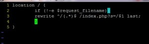
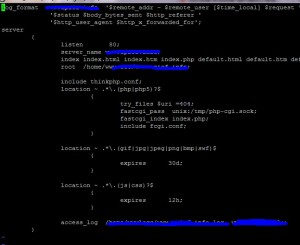

'URL_MODEL' => 2, // rewrite在服务器中切换到nginx的安装目录，我这里是 /usr/local/nginx。然后添加thinkphp.conf 文件
vim /usr/local/nginx/conf/thinkphp.conf
内容如下
location / {
if (!-e $request_filename){
rewrite ^/(.*)$ /index.php?s=/$1 last;
}
}
然后在你的配置文件中include一下刚刚的配置文件。
如果你的ThinkPHP入口文件index.php不在根目录，则需要把thinkphp.conf改成这样
location /入口文件所在目录/ {
if (!-e $request_filename){
rewrite ^/abc/(.*)$ /abc/index.php?s=/$1 last;
}
}